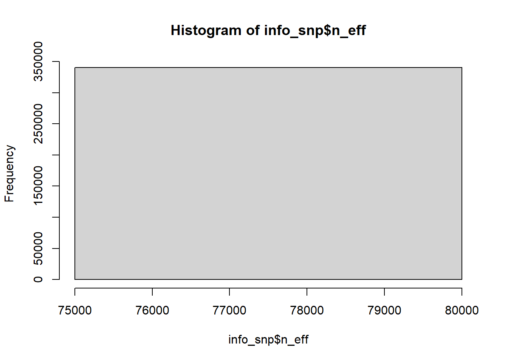
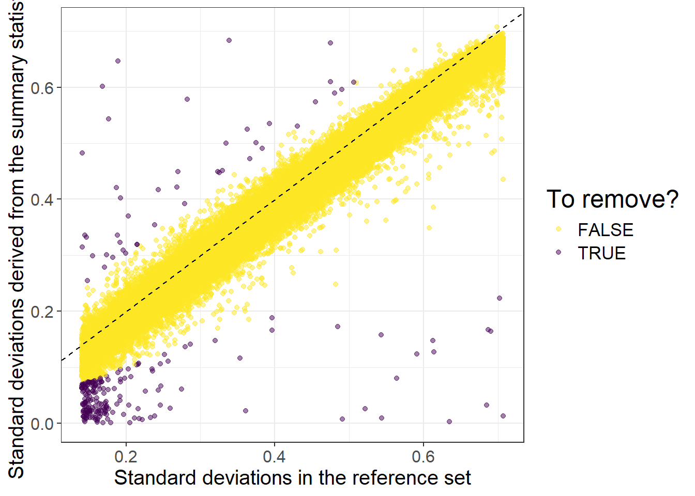
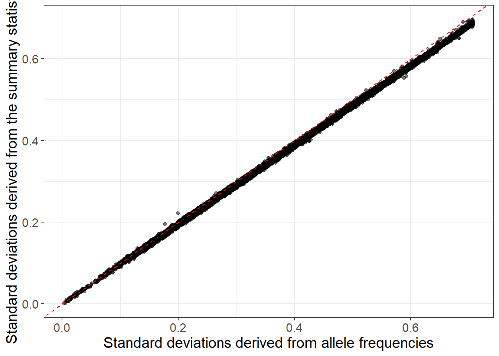
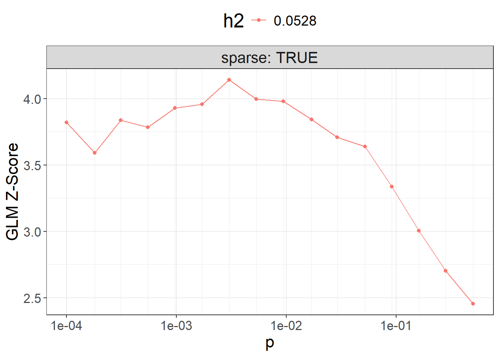

Chapter 8 Polygenic (risk) scores (PGS, or PRS)
Improving PGS methods is the main topic of my research work. These are the main methods currently available in my packages:
efficient penalized regressions, with individual-level data (Privé, Aschard, & Blum (2019) + tutorial)
Clumping and Thresholding (C+T) and Stacked C+T (SCT), with GWAS summary statistics and individual level data (Privé, Vilhjálmsson, Aschard, & Blum (2019) + tutorial)
LDpred2, with summary statistics (Privé, Arbel, et al. (2020) + tutorial)
lassosum2, with the same input data as LDpred2 (Privé, Arbel, et al. (2022) + tutorial)
You can now use LDpred2-auto for inference of e.g. the SNP-heritability and polygenicity, i.e. the proportion of phenotypic variance that can be explained by the set of genetic variants considered and the proportion of causal variants in this set (Privé et al. (2023) + tutorial).
8.1 One use of PRS
For common complex diseases such as heart diseases, cancers, diabetes,
many common genetic variants are causal, but with a small effect
(they do have an impact on the probability of developing the disease, but often small)\(\Rightarrow\) a common causal variant is not useful as a standalone risk factor
in contrast to rare mutations causing rare monogenic diseases
With polygenic risk scores (PRS),
many genetic variants are aggregated in a joint predictive model
by aggregating many small effects, the PRS can have a large effect
\(\Rightarrow\) the PRS is useful as a risk factor
Then PRS can be used in public health to improve disease risk stratification beyond traditional risk factors (age, smoking, pollution, low SES, diet, physical inactivity, family history, low-frequency large-effect genetic mutations, etc).
PRS are complementary to these risk factors and improve prediction accuracy—for example, by identifying more individuals at high risk for a given disease. The clinical validity of PRS has been shown in many studies, but their clinical utility has been demonstrated in a clinical trial conducted in the UK for cardiovascular disease (Fuat et al., 2024).

8.2 PGS from individual-level data
If you have individual-level data (i.e. genotypes and phenotypes), you can basically use any supervised learning (machine learning) method to train a PGS. However, because of the size of the genetic data, you will quickly have scalability issues with these models. Moreover, it has been shown that effects for most diseases and traits are small and essentially additive, and that fancy methods such as deep learning are not much effective at constructing PGS (Kelemen et al., 2025).
Therefore, using penalized linear/logistic regression (PLR) can be a very efficient and effective method to train PGS. In my R package bigstatsr, I have developed a very fast implementation with automatic choice of the two hyper-parameters (Privé, Aschard, et al., 2019).
This is an example of using PLR for predicting height from genotypes in the UK Biobank
training on 350K individuals x 656K variants in less than 24H
within both males and females, PGS achieved a correlation of 65.5% (\(r^2\) of 42.9%) between genetically predicted and true height

8.3 PGS from GWAS summary statistics
Why is it suboptimal to derive a PGS like this: \(PGS_i = \sum_j \hat\beta_j \cdot G_{i,j}\)?
(\(\hat\beta\) are the GWAS effects sizes here)

Figure 8.1: Local correlation between variants causes redundant GWAS signals.
8.3.1 Clumping + Thresholding (C+T, or P+T): restricting predictors
C+T is the simplest and has long been the most widely used method for constructing PGS based on GWAS summary statistics. C+T is simple because it directly uses the GWAS effects as the predictive (PGS) effects. To reduce noise in the predictor, C+T only uses genetic variants that pass some chosen p-value threshold (the thresholding part). To avoid redundancy, C+T retains only one variant per group of correlated variants (the clumping step), as GWAS effects were learned independently rather than jointly.

\[PGS_i = \sum_{\substack{j \in S_\text{clumping} \\ p_j~<~p_T}} \hat\beta_j \cdot G_{i,j}\]


In GWAS, a p-value threshold of \(5 \times 10^{-8}\) is used when reporting significant findings, which corresponds to correcting for one million independent tests. Yet for prediction purposes, including less significant variants can substantially improve predictive performance of C+T. Therefore, the p-value threshold must be chosen carefully in C+T. A stringent threshold risks excluding informative variants, while a lenient threshold may introduce noise by including too many non-informative variants. For the clumping step, one must choose the threshold above which to discard correlated variants.
Hyper-parameters in C+T (and usual values):
threshold on squared correlation in clumping (e.g. 0.2)
window size for LD computation in clumping (e.g. 500 kb)
p-value threshold (e.g. test \(p_T\) between \(1\) and \(10^{-8}\) and choose the best one in a tuning/validation set)
other parameters such as the threshold of imputation quality score (e.g. \(INFO > 0.5\)) or minor allele frequency (e.g. \(MAF > 0.01\))
A popular software to derive C+T scores is PRSice-2 (Choi & O’Reilly, 2019).
My contributions in Privé, Vilhjálmsson, et al. (2019):
an implementation to efficiently compute thousands of C+T scores corresponding to different sets of hyper-parameters (to explore more values for more hyper-parameters, rather than simply a few values for \(p_T\) only)
going further by stacking with a (penalized) linear combination of all C+T models (instead of just choosing the best model) \(\Rightarrow\) SCT (Stacked C+T)
This can lead to achieving much better predictive performance compared to some standard use of C+T (tuning \(p_T\) only). Over the past years, stacking has become a very popular methodology to improve PGS predictive performance, sometimes by combining many models from multiple methods.
8.3.2 Other methods
There are methods that better model LD than C+T (which uses simple heuristics):
lassosum (Mak, Porsch, Choi, Zhou, & Sham, 2017) and lassosum2 (Privé, Arbel, et al., 2022), which approximate a penalized linear regression based on GWAS summary statistics and some LD reference
Bayesian methods such as LDpred2 (Privé, Arbel, et al., 2020), SBayesR/RC (Lloyd-Jones et al., 2019; Zheng et al., 2024) and PRS-CS (Ge, Chen, Ni, Feng, & Smoller, 2019), also approximating a penalized regression, with some different priors and details in the implementation
many others
My opinion on these methods:
C+T is known to be suboptimal but works okay for traits with low polygenicity (the proportion of causal variants) and can be improved with proper tuning/stacking (cf. above)
lassosum is very good at getting very sparse solutions (lots of variants have a zero effect; they are not used in the PGS); C+T can be good for that as well (when a low p-value threshold is used; e.g. with \(p_T < 0.01\), you can achieve a 95–99% sparsity)
LDpred2 is the best in my very biased opinion üòâ; there is a ‚Äúgrid‚Äù option where you need to tune two hyper-parameters and an ‚Äúauto‚Äù option to directly infer hyper-parameters of the method from the data, and many developments have been made regarding improving its robustness
SBayesR is very good with in-sample LD (i.e. from the GWAS data), otherwise it lacks robustness
SBayesRC uses external functional annotations to help prioritize causal variants, which can help improve prediction, especially when applying the resulting PGS to other populations
PRS-CS uses a lot of regularization internally, which makes it very robust, but sometimes at the expense of lower predictive ability; it is also usually slower than the other methods mentioned before

Figure 8.2: Comparison of PGS methods from Privé, Arbel, et al. (2020). Since then, developments have been made to ensure even better predictive performance of LDpred2 models.
8.4 Predictive ability of PGS
What influences predictive power of PGS?
Predictive power \(r^2\) is bounded by the heritability \(h^2\) captured by the set of variants used (called SNP-heritability), except for some particular cases (X. Wang et al., 2023).
\(r^2\) should increase with GWAS sample size \(N\), even though it probably increases slower than expected (Henches et al., 2025), possibly due to meta-analyzing heterogeneous GWAS summary statistics
\(r^2\) decreases with polygenicity (the proportion of causal variants), because there are many smaller effects, harder to detect and estimate.
Let’s denote \(M_c\) the number of causal variants.
The theoretical upper bound for the phenotypic variance that can be explained by PGS (Daetwyler, Villanueva, & Woolliams, 2008):
\[r^2_\text{max} = \dfrac{h^2}{1 + (1 - r^2_\text{max}) \dfrac{M_c}{N h^2}}\]
In R: uniroot(function(r2) r2 - h2 / (1 + (1 - r2) * M_c / (N * h2)), interval = c(0, h2))$root
A major limitation of current PGS is their poor portability across ancestries.
Here is an example across 245 phenotypes and 9 ancestry groups (Privé, Aschard, et al., 2022):
![Partial correlations and 95% CIs in the UK test set versus in a test set from another ancestry group. Each point represents a phenotype and training has been performed with penalized regression on UK individuals and HapMap3 variants. The slope (in blue) is computed using Deming regression accounting for standard errors in both x and y, fixing the intercept at 0. The square of this slope is provided above each plot, which we report as the relative predictive performance compared to testing in the 'United Kingdom' ancestry group (see next figure).](https://github.com/privefl/UKBB-PGS/blob/main/docs/figures/lasso-ancestry-2.png?raw=true)
Figure 8.3: Partial correlations and 95% CIs in the UK test set versus in a test set from another ancestry group. Each point represents a phenotype and training has been performed with penalized regression on UK individuals and HapMap3 variants. The slope (in blue) is computed using Deming regression accounting for standard errors in both x and y, fixing the intercept at 0. The square of this slope is provided above each plot, which we report as the relative predictive performance compared to testing in the ‘United Kingdom’ ancestry group (see next figure).
Basically, predictive performance drops with genetic distance (captured by distance in the PCA space here) from the training population (Ding et al., 2023; Privé, Aschard, et al., 2022):

One possible explanation: different tagging, because correlations between genetic variants are different across populations (Y. Wang et al., 2020):

- effect of a causal variant should be similar for all populations (Hou et al., 2023; Hu et al., 2025)
- all 3 variants have same effect in N.W. Europeans (perfect correlation)
- however, in E. Asians, variant 1 retains only 60% of the causal effect, and 40% in W. Africans
8.5 Future of PGS
Use ever-increasing GWAS summary statistics
Use more variants to include more causal variants (currently, most methods use around 1M variants)
Integrate functional annotations and multi-ancestry data to prioritize causal variants and get better PGS for all populations
8.6 Exercise with LDpred2 and lassosum2
First, let’s carefully look at the LDpred2 tutorial.
8.6.1 Preparing the data
Let’s first read the data produced in 3.3:
library(bigsnpr)
obj.bigsnp <- snp_attach("tmp-data/GWAS_data_sorted_QC.rds")
G <- obj.bigsnp$genotypes
NCORES <- nb_cores()Let’s use some GWAS summary statistics for CAD that I derived from the UK Biobank (Bycroft et al., 2018):
gz <- runonce::download_file(
"https://figshare.com/ndownloader/files/38077323",
dir = "tmp-data", fname = "sumstats_CAD_tuto.csv.gz")
readLines(gz, n = 5)#> [1] "chr,pos,rsid,allele1,allele2,freq,info,beta,se"
#> [2] "1,721290,rs12565286,C,G,0.035889027911808,0.941918079726998,0.0361758959140647,0.0290865883937757"
#> [3] "1,752566,rs3094315,A,G,0.840799909379283,0.997586884856296,-0.0340838522604864,0.0144572980122262"
#> [4] "1,777122,rs2980319,T,A,0.871069627596275,0.997302103009046,-0.018725387068563,0.0155088941489917"
#> [5] "1,785989,rs2980300,C,T,0.869926014169995,0.991323313568096,-0.0182890096248982,0.0154915306067785"Read and prepare them in the format required by LDpred2 (columns “chr”, “pos”, “a0”, “a1”, “beta”, “beta_se”, and “n_eff”, as well as additional columns “freq” and “info” for QC)
Note that there were 20791 cases and 323124 controls in the GWAS. Can you estimate the total effective sample size without this information?
Click to see solution
sumstats <- bigreadr::fread2(
gz,
select = c("chr", "pos", "allele2", "allele1", "beta", "se", "freq", "info"),
col.names = c("chr", "pos", "a0", "a1", "beta", "beta_se", "freq", "info"))
# GWAS effective sample size for binary traits (4 / (1 / n_case + 1 / n_control))
# For quantitative traits, just use the total sample size for `n_eff`.
(Neff <- 4 / (1 / 20791 + 1 / 323124))#> [1] 78136.41#> 99.9%
#> 73780.49Note that we recommend to use imputed HapMap3(+) variants when available, for which you can download some precomputed LD reference for European individuals based on the UK Biobank. Here, we will use the genotyped variants for this tutorial. Try to use an LD reference with at least 2000 individuals (we have only 1401 in this example). The LDpred2 tutorial provides more information.
Match the variants in the GWAS summary statistics with the internal data we have here.
What should you do for the allele frequencies?
Click to see solution
library(dplyr)
map <- transmute(obj.bigsnp$map,
chr = chromosome, pos = physical.pos,
a0 = allele2, a1 = allele1)
info_snp <- snp_match(sumstats, map, return_flip_and_rev = TRUE) %>%
mutate(freq = ifelse(`_REV_`, 1 - freq, freq),
`_REV_` = NULL, `_FLIP_`= NULL) %>%
print()#> chr pos a0 a1 beta beta_se freq info n_eff
#> 1 1 752566 T C 0.034083852 0.01445730 0.15920009 0.9975869 78136.41
#> 2 1 785989 G A 0.018289010 0.01549153 0.13007399 0.9913233 78136.41
#> 3 1 798959 G A 0.003331013 0.01307707 0.20524280 0.9734898 78136.41
#> 4 1 947034 T C -0.021202725 0.02838148 0.03595249 0.9924989 78136.41
#> _NUM_ID_.ss _NUM_ID_
#> 1 2 2
#> 2 4 4
#> 3 5 5
#> 4 6 6
#> [ reached 'max' / getOption("max.print") -- omitted 340206 rows ]What QC could you perform on the GWAS summary statistics? Apply it here.
Click to see solution
Check the summary statistics; some quality control may be needed:

#> Min. 1st Qu. Median Mean 3rd Qu. Max.
#> 0.0000027 0.1100250 0.2261357 0.2365588 0.3580946 0.9998703Then we can perform some quality control on the summary statistics by checking whether standard deviations (of genotypes) inferred from the external GWAS summary statistics are consistent with the ones in the internal data we have:
af_ref <- big_colstats(G, ind.col = info_snp$`_NUM_ID_`, ncores = NCORES)$sum / (2 * nrow(G))
sd_ref <- sqrt(2 * af_ref * (1 - af_ref))
sd_ss <- with(info_snp, 2 / sqrt(n_eff * beta_se^2 + beta^2))
is_bad <-
sd_ss < (0.5 * sd_ref) | sd_ss > (sd_ref + 0.1) |
sd_ss < 0.05 | sd_ref < 0.05 # basically filtering small MAF
library(ggplot2)
ggplot(slice_sample(data.frame(sd_ref, sd_ss, is_bad), n = 100e3)) +
geom_point(aes(sd_ref, sd_ss, color = is_bad), alpha = 0.5) +
theme_bigstatsr(0.9) +
scale_color_viridis_d(direction = -1) +
geom_abline(linetype = 2) +
labs(x = "Standard deviations in the reference set",
y = "Standard deviations derived from the summary statistics",
color = "To remove?")
When using quantitative traits (linear regression instead of logistic regression for the GWAS), you need to replace 2 by sd(y) when computing sd_ss (equations (6.2) and (6.1)).
When allele frequencies are available in the GWAS summary statistics, you can use them (along with INFO scores) to get an even better match (equation (6.3)):
sd_af <- with(info_snp, sqrt(2 * freq * (1 - freq) * info))
ggplot(slice_sample(data.frame(sd_af, sd_ss), n = 100e3)) +
geom_point(aes(sd_af, sd_ss), alpha = 0.5) +
theme_bigstatsr(0.9) +
geom_abline(linetype = 2, color = "red") +
labs(x = "Standard deviations derived from allele frequencies",
y = "Standard deviations derived from the summary statistics")
You can still use the reference panel to do some quality control by comparing allele frequencies, which is useful for detecting allelic errors (inversion of alleles so that the effect size should have the opposite sign) and the other issues detected before:
Then you can filter
is_bad2 <-
sd_ss < (0.7 * sd_af) | sd_ss > (sd_af + 0.1) |
sd_ss < 0.05 | sd_af < 0.05 |
info_snp$info < 0.7 | abs(af_diff) > 0.07 # based on visual inspection
mean(is_bad2)#> [1] 0.002410276Then, we compute the correlation for each chromosome (note that we are using only 4 chromosomes here, for faster running of this tutorial):
# Precomputed genetic positions (in cM) to avoid downloading large files in this tuto
gen_pos <- readRDS(runonce::download_file(
"https://figshare.com/ndownloader/files/38247288",
dir = "tmp-data", fname = "gen_pos_tuto.rds"))
df_beta <- dplyr::filter(df_beta, chr %in% 1:4) # TO REMOVE (for speed here)
for (chr in 1:4) { # REPLACE BY 1:22
print(chr)
corr0 <- runonce::save_run({
# indices in 'sumstats'
ind.chr <- which(df_beta$chr == chr)
# indices in 'G'
ind.chr2 <- df_beta$`_NUM_ID_`[ind.chr]
# genetic positions (in cM)
# POS2 <- snp_asGeneticPos(map$chr[ind.chr2], map$pos[ind.chr2], dir = "tmp-data")
POS2 <- gen_pos[ind.chr2] # PRECOMPUTED HERE; USE snp_asGeneticPos() IN REAL CODE
# compute the banded correlation matrix in sparse matrix format
snp_cor(G, ind.col = ind.chr2, size = 3 / 1000, infos.pos = POS2,
ncores = NCORES)
}, file = paste0("tmp-data/corr_chr", chr, ".rds"))
# transform to SFBM (on-disk format) on the fly
if (chr == 1) {
ld <- Matrix::colSums(corr0^2)
corr <- as_SFBM(corr0, "tmp-data/corr", compact = TRUE)
} else {
ld <- c(ld, Matrix::colSums(corr0^2))
corr$add_columns(corr0, nrow(corr))
}
}#> [1] 1
#> user system elapsed
#> 110.20 0.71 28.93
#> Code finished running at 2025-06-13 14:37:03 CEST
#> [1] 2
#> user system elapsed
#> 141.60 0.64 37.57
#> Code finished running at 2025-06-13 14:37:47 CEST
#> [1] 3
#> user system elapsed
#> 130.27 0.75 34.44
#> Code finished running at 2025-06-13 14:38:27 CEST
#> [1] 4
#> user system elapsed
#> 112.91 0.95 31.21
#> Code finished running at 2025-06-13 14:39:04 CEST#> [1] 0.5756225Note that you will need at least the same memory as this file size (to keep it cached for faster processing) + some other memory for all the results returned by LDpred2. If you do not have enough memory, processing will be very slow (because you would read the data from disk all the time). If using HapMap3 variants, requesting 60 GB should be enough. For this small example, 8 GB of RAM on a laptop should be enough.
8.6.2 LDpred2
Following the LDpred2 tutorial, run the three versions of LDpred2 and test their predictive performance for obj.bigsnp$fam$CAD.
For speed here, you can use a smaller grid of hyper-parameters for LDpred2-grid, and a smaller number of burn-in/iterations for LDpred2-auto.
Click to see solution
We can now run LD score regression:
(ldsc <- with(df_beta, snp_ldsc(ld, length(ld), chi2 = (beta / beta_se)^2,
sample_size = n_eff, blocks = NULL)))#> int h2
#> 0.9795999 0.0528327We can now run LDpred2-inf very easily:
# LDpred2-inf
beta_inf <- snp_ldpred2_inf(corr, df_beta, ldsc_h2_est)
pred_inf <- big_prodVec(G, beta_inf, ind.col = df_beta$`_NUM_ID_`)
AUCBoot(pred_inf, obj.bigsnp$fam$CAD)#> Mean 2.5% 97.5% Sd
#> 0.55133937 0.51924109 0.58355543 0.01630443For LDpred2(-grid), this is the grid we recommend to use:
#> [1] 0.0158 0.0370 0.0528 0.0740#> [1] 1.0e-05 1.8e-05 3.2e-05 5.6e-05 1.0e-04 1.8e-04 3.2e-04 5.6e-04
#> [9] 1.0e-03 1.8e-03 3.2e-03 5.6e-03 1.0e-02 1.8e-02 3.2e-02 5.6e-02
#> [17] 1.0e-01 1.8e-01 3.2e-01 5.6e-01 1.0e+00#> [1] 168 3Here, we will be using this smaller grid instead (for speed in this tutorial):
# smaller grid for tutorial only (USE PREVIOUS ONE IN REAL CODE)
(params <- expand.grid(p = signif(seq_log(1e-4, 0.5, length.out = 16), 2),
h2 = round(ldsc_h2_est, 4), sparse = TRUE))#> p h2 sparse
#> 1 0.00010 0.0528 TRUE
#> 2 0.00018 0.0528 TRUE
#> 3 0.00031 0.0528 TRUE
#> 4 0.00055 0.0528 TRUE
#> 5 0.00097 0.0528 TRUE
#> 6 0.00170 0.0528 TRUE
#> 7 0.00300 0.0528 TRUE
#> 8 0.00530 0.0528 TRUE
#> 9 0.00940 0.0528 TRUE
#> 10 0.01700 0.0528 TRUE
#> 11 0.02900 0.0528 TRUE
#> 12 0.05200 0.0528 TRUE
#> 13 0.09100 0.0528 TRUE
#> 14 0.16000 0.0528 TRUE
#> 15 0.28000 0.0528 TRUE
#> 16 0.50000 0.0528 TRUEbeta_grid <- snp_ldpred2_grid(corr, df_beta, params, ncores = NCORES)
params$sparsity <- colMeans(beta_grid == 0)Then, we can compute the corresponding PGS for all these models, and visualize their performance:
pred_grid <- big_prodMat(G, beta_grid, ind.col = df_beta[["_NUM_ID_"]],
ncores = NCORES)
params$score <- apply(pred_grid, 2, function(.x) {
if (all(is.na(.x))) return(NA) # models that diverged substantially
summary(glm( # simply use `lm()` for quantitative traits
CAD ~ .x + sex + age, data = obj.bigsnp$fam, family = "binomial"
))$coef[".x", 3]
})
ggplot(params, aes(x = p, y = score, color = as.factor(h2))) +
theme_bigstatsr() +
geom_point() +
geom_line() +
scale_x_log10(breaks = 10^(-5:0), minor_breaks = params$p) +
facet_wrap(~ sparse, labeller = label_both) +
labs(y = "GLM Z-Score", color = "h2") +
theme(legend.position = "top", panel.spacing = unit(1, "lines"))
Then you can use the best-performing model here.
Note that, in practice, you should use only individuals from the validation set to compute the $score and then evaluate the best model for the individuals in the test set (unrelated to those in the validation set).
library(dplyr)
best_beta_grid <- params %>%
mutate(id = row_number()) %>%
arrange(desc(score)) %>%
print() %>%
slice(1) %>%
pull(id) %>%
beta_grid[, .]#> p h2 sparse sparsity score id
#> 1 0.00300 0.0528 TRUE 0.7682772 4.047667 7
#> 2 0.00530 0.0528 TRUE 0.6834668 4.022616 8
#> 3 0.00940 0.0528 TRUE 0.5960028 3.978852 9
#> 4 0.00018 0.0528 TRUE 0.9542998 3.957893 2
#> 5 0.00170 0.0528 TRUE 0.8309081 3.942062 6
#> 6 0.00031 0.0528 TRUE 0.9384462 3.920542 3
#> 7 0.00097 0.0528 TRUE 0.8792229 3.893707 5
#> 8 0.01700 0.0528 TRUE 0.5065314 3.862210 10
#> [ reached 'max' / getOption("max.print") -- omitted 8 rows ]What is the best model with less than 5% of variants used?
To run LDpred2-auto, you can use:
# LDpred2-auto
multi_auto <- snp_ldpred2_auto(
corr, df_beta, h2_init = ldsc_h2_est,
vec_p_init = seq_log(1e-4, 0.2, 30),
burn_in = 100, num_iter = 100, # TO REMOVE, for speed here
allow_jump_sign = FALSE,
use_MLE = FALSE, # USE `TRUE` ONLY FOR GWAS WITH LARGE N AND M
shrink_corr = 0.95,
ncores = NCORES)Perform some quality control on the chains:
# `range` should be between 0 and 2
(range <- sapply(multi_auto, function(auto) diff(range(auto$corr_est))))#> [1] 0.05489982 0.05389660 0.05374733 0.05412644 0.05454006 0.05350797
#> [7] 0.05476451 0.05473346 0.05337362 0.05458765 0.05351119 0.05363583
#> [13] 0.05452689 0.05287833 0.05546422 0.05547105 0.05411766 0.05465551
#> [19] 0.05285145 0.05351512 0.05599736 0.05407932 0.05269088 0.05545005
#> [25] 0.05394354 0.05358078 0.05441346 0.05439533 0.05454809 0.05078152#> [1] 1 2 3 4 5 6 7 8 9 10 11 12 13 14 15 16 17 18 19 20 21 22 24
#> [24] 25 26 27 28 29To get the final effects / predictions, you should only use chains that pass this filtering:
We can finally test the final prediction
final_pred_auto <- big_prodVec(G, final_beta_auto,
ind.col = df_beta[["_NUM_ID_"]],
ncores = NCORES)
AUCBoot(final_pred_auto, obj.bigsnp$fam$CAD)#> Mean 2.5% 97.5% Sd
#> 0.56425205 0.53211066 0.59607493 0.016365638.6.3 lassosum2: grid of models
lassosum2 is a re-implementation of the lassosum model (Mak et al., 2017) that now uses the exact same input parameters as LDpred2 (corr and df_beta). It can therefore be run next to LDpred2 and the best model can be chosen using the validation set.
Run lassosum2 and test its predictive performance for obj.bigsnp$fam$CAD.
For speed here, you can use parameters nlambda = 10, maxiter = 50.
Click to see solution
beta_lassosum2 <- snp_lassosum2(
corr, df_beta, ncores = NCORES,
nlambda = 10, maxiter = 50) # TO REMOVE, for speed hereAs with LDpred2-grid, we can compute the corresponding PGS for all these models, and visualize their performance:
pred_grid2 <- big_prodMat(G, beta_lassosum2, ind.col = df_beta[["_NUM_ID_"]],
ncores = NCORES)
params2 <- attr(beta_lassosum2, "grid_param")
params2$score <- apply(pred_grid2, 2, function(.x) {
if (all(is.na(.x))) return(NA) # models that diverged substantially
summary(glm( # simply use `lm()` for quantitative traits
CAD ~ .x + sex + age, data = obj.bigsnp$fam, family = "binomial"
))$coef[".x", 3]
})
ggplot(params2, aes(x = lambda, y = score, color = as.factor(delta))) +
theme_bigstatsr() +
geom_point() +
geom_line() +
scale_x_log10(breaks = 10^(-5:0)) +
labs(y = "GLM Z-Score", color = "delta")#> Warning: Removed 4 rows containing missing values or values outside the scale range
#> (`geom_point()`).#> Warning: Removed 4 rows containing missing values or values outside the scale range
#> (`geom_line()`).When are large delta values useful?
best_grid_lassosum2 <- params2 %>%
mutate(id = row_number()) %>%
arrange(desc(score)) %>%
print() %>%
slice(1) %>%
pull(id) %>%
beta_lassosum2[, .]#> lambda delta num_iter time sparsity score id
#> 1 0.00996541 0.001 51 0.14 0.9937624 4.112203 3
#> 2 0.00996541 0.010 51 0.17 0.9936938 4.106545 13
#> 3 0.00996541 0.100 45 0.12 0.9930475 4.053764 23
#> 4 0.01579411 0.001 51 0.09 0.9997062 3.977849 2
#> 5 0.00996541 1.000 14 0.05 0.9902959 3.976200 33
#> 6 0.01579411 0.010 51 0.11 0.9997062 3.973049 12
#> 7 0.01579411 0.100 35 0.08 0.9996181 3.900467 22
#> [ reached 'max' / getOption("max.print") -- omitted 33 rows ]We can choose the best-overall model from both LDpred2-grid and lassosum2: